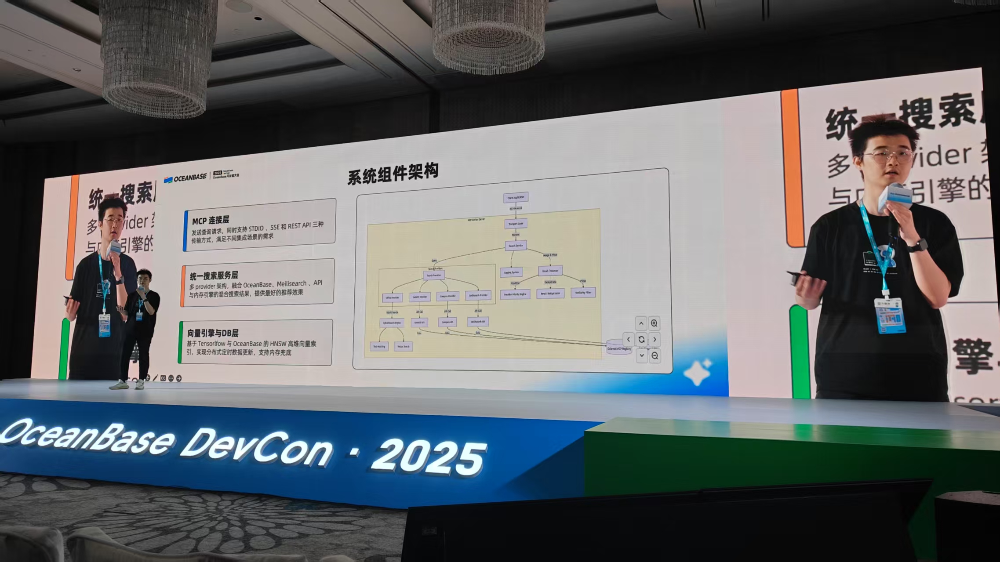
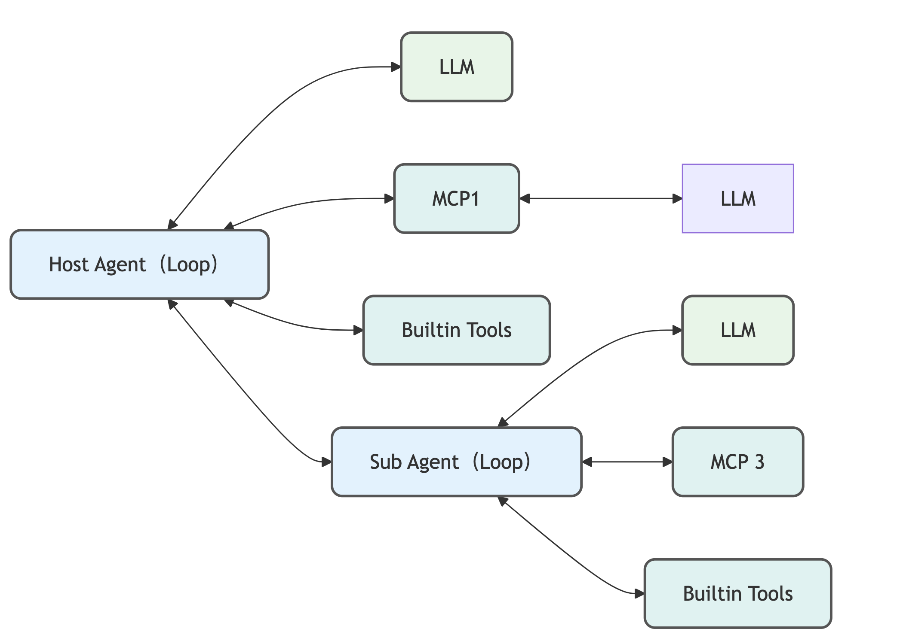

- Skill.
AI Agent production experience: led 8M MAU general intelligent agent system architecture; proficient in RAG, Tool Use, MCP, multimodal Agent; drive full-process R&D efficiency with AI Coding
Master Java, familiar with JVM principles; proficient with SpringBoot + Mybatis, MetaQ, big data tools MaxCompute, Flink, etc.
Familiar with MySQL; experienced with Redis, Lucene, Hologres (PostgreSQL), BigTable and other OLAP/TP databases
React + Python full-stack capability: independently developed Tao Factory billing domain frontend framework; Python for Agent engineering and data processing
Harness Engineering deep practice: build Prompt-Test-Verify quality loop, achieve 100% AI delivery and verification; continuously promote AI Coding integration with DDD, TDD
- Experience.
OpenSource
MCPAdvisor 2025.02 Demo SourceCode

MCP ecosystem expanding rapidly but with fragmented installation and high discovery costs — developed MCPAdvisor to manage MCPs via natural language: automatically retrieve, evaluate, and install the most suitable MCP Servers, solving AI Coding toolchain fragmentation pain points.Won 2nd Place at 2025 OceanBase AI Hackathon (Team Leader).
WritingHelper 2021.02 Demo SourceCode
I realized that there was a lack of tools for writing authentic IELTS phrases on the market, so I developed WritingHelper.
Built onNode.jsusing a trie tree andresponsibility chainpattern withLSPAPIs for phrase autocompletion, Chinese translation, timing and counting.15,000+ downloads since launch.
Work Project
Ant Group · Ant Insurance FinTech 2024.06 - present
Responsible for the AI Agent application of "Insurance Chaxha" on Alipay — China's first insurance product with full-category Agent interpretation capability, serving **8 million MAU**. Also leading the general intelligent agent system and MCP-related work.
Insurance Chaxha · General Agent System 说明

Addressing siloed Agent development and lack of reusable infrastructure — designed Agent Runtime-Executor-SessionPool three-layer general intelligent agent architecture, specifically implementing Claude Code-like general Agent Loop based on LangGraph, supporting Alipay Insurance Chaxha (8 million MAU) and innovative page AIGC real-time visual interaction.Implemented Harness Engineering (Prompt-Test-Verify loop) to achieve 100% AI-delivered requirements; drove full-process efficiency from design specs to frontend components via AI Coding workflow, establishing a replicable AI quality system. Project published as best practice in Alibaba Cloud Developer.
MCP Integration & Domain Agent Framework 说明
Over 100 existing HTTP/HSF services could not be directly consumed by Agents — led MCPBridge construction to MCP-ize them, designed Ant Insurance domain MCP Server, built cross-business reusable toolchain based on OneAgent + MCPs paradigm, significantly reducing new business Agent onboarding cycles.
Taotian Group · Tao Factory 2021.06 - 2024.06
Participated in industry-finance integration and led "Money-Bill-Invoice Integration" engineering; later co-led the pre-sales AI module from scratch with mentor, covering RAG knowledge base, Q&A, recommendation and other intelligent chains.
Knowledge Base Pipeline 说明
 Low answer hit rate and fragmented knowledge sources — built multi-source fusion RAG knowledge base pipeline (multi-path retrieval + LLM reranking + generation), integrating merchant, operator, algorithm recommendation, and missed-hit knowledge sources, establishing scalable effective answer production loop, supporting Tao Factory full-category pre-sales and after-sales intelligent Q&A.
Low answer hit rate and fragmented knowledge sources — built multi-source fusion RAG knowledge base pipeline (multi-path retrieval + LLM reranking + generation), integrating merchant, operator, algorithm recommendation, and missed-hit knowledge sources, establishing scalable effective answer production loop, supporting Tao Factory full-category pre-sales and after-sales intelligent Q&A.Money-Bill-Invoice Integration 说明
Led the automation and integration of “settlement”, “billing” and “supplier invoicing” across 10+ billing services with data volume reaching tens of billions. Built a
DSLfor faster onboarding, appliedDDD,SPIand responsibility-tree patterns. Reduced chimney-style development cycles to one week. Featured in “Alibaba Technology” publication.
Alibaba · Taote Business Department 2021.06 - 2022.10
Responsible for replenishment & inventory planning in supply chain, ensuring goods reach shelves at the right quantity, time and place to meet order demand.
Replenishment Pipeline Reconstruction
As the 1.5M-item product pool grew, the entire pipeline from data integration failed nearly every week. Rebuilt from scratch: pool reduction, pipeline optimization, and proactive failure monitoring.
Selected search engine HA3 with SARO, Swift, and Flink. Implemented HTTP client and ORM from scratch; applied async, concurrency, and slicing optimizations along with strategy/redundancy business-level tuning.
Reduced work orders and failures immediately; shortened recalculation time by 93%. Awarded “Making Users Happy” commendation.

Halley
I act quickly once I understand my role.
One week, my token spending exceeded my salary. 🤖💸
- Basic info.
- Halley / Male / 1997
- Work Experience:5 Years / P7
- Education background:
Period University Ranking 2019-2021 Peking (Bachelor) 15/139 2015-2017 & 2018-2019 Shihezi (Bachelor) 1/69 2017-2018 Chongqing (Exchange) 24/100 - Major:Software Engineering
- English Level: CET-6, my essay
- Blog: xiaohui.cool
- GitHub: github.com/istarwyh
- Online Resume: istarwyh.github.io/resume-it
- Contact.
- Email: yihui-wang@qq.com
- Phone: +86-15955311246
- WeChat: istarwyh
- Telegram: xiaohui
- Application.
- AI Agent Expert / Intelligent System Architect
- Honor.
- 2025
Ant Group | Annual Outstanding Creator & AI Star of the Year (FinTech Dept.)- 2025
Alibaba & Ant ATA | Best Individual Agent Practice Award (1st Session)- 2025
OceanBase AI Hackathon | 2nd Place | Team Leader | MCPAdvisor- 2025
Ant Group Hackathon | 3rd Place | Team Leader- 2023.3
Alibaba | Code Hero | 8/222 | Excellent Code Quality- 2020.1
Peking University | Learning Excellence Award | 15/139 | GPA3.789- 2017.11
ShiHezi University | National Scholarship | 1/69 | GPA3.89- Tech.
AI AgentPythonJava/Junit5MCP/RAGMysql/OTSLLM/React